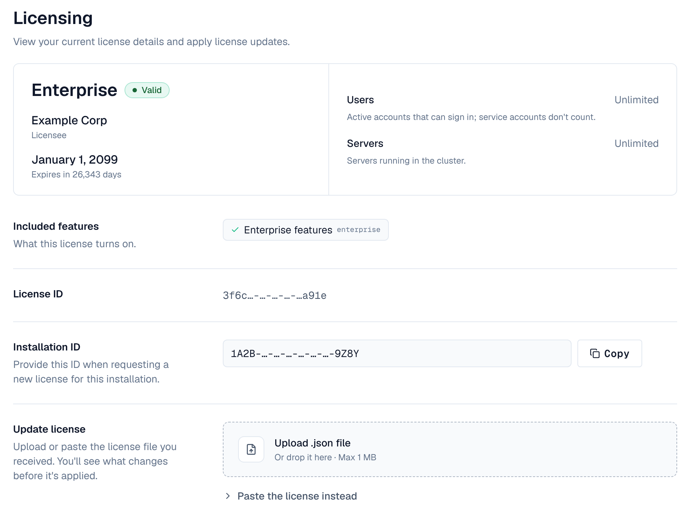

A Wiki licence is a signed file bound to the installation's ID. Its tier decides which features are available; it can also cap how many people may sign in and how many servers may run.
The Wiki isn't released yet. Early adopters: contact us for access to get the server and a licence.
1. What each tier turns on
Every Wiki feature works on every tier except page analytics and mirror spaces, which need Pro, and whiteboards, which need Enterprise. Plugin blocks need plugins, which need Pro:
| Wiki feature | Tier |
|---|---|
| Spaces, pages and the editor with its built-in blocks, drafts, versions, reviews, page restrictions, copies and templates | Standard |
| Editing together, comments, attachments and videos, labels and page feedback | Standard |
| Q&A, space calendars and calendar feeds | Standard |
| Imports (Confluence, Markdown) and exports (Word, PDF) | Standard |
| Anonymous access to public spaces and questions | Standard |
| Page analytics | Pro |
| Kee, the Wiki's AI: writing help, page summaries, Ask Kee with proposed changes, Kee studio, change summaries and scheduled help. A fallback model at another provider and the usage export by person need Enterprise | Pro |
| Outside AI apps: people connect their own AI apps to the Wiki's built-in server (works with Kee off) | Pro |
| Mirror spaces: spaces that follow a git repository or uploaded archives | Pro |
| Plugin blocks in pages | Pro, as for every plugin |
| Whiteboards: live canvases, facilitation, whiteboard templates and the whiteboard block | Enterprise |
The tiers add these platform features:
| Tier | Adds |
|---|---|
| Standard | The Wiki features above marked Standard, users and groups, Local and Delegated directories, backups, email, banners |
| Pro | Page analytics, Kee, clustering (several servers), the system check, the audit log, policies, automation, plugins, LDAP and Active Directory, API token IP allowlists and rotation |
| Enterprise | Whiteboards, single sign-on, branding, SCIM, Entra ID and Google Workspace directories, managing everyone's API tokens |
A feature the licence doesn't cover shows what it would need instead of its settings, and its API answers 402. Without Pro, the Analytics entry in the left navigation and the spaces' Analytics tab aren't shown, and page views aren't recorded. Below Pro the "/" menu offers no plugin blocks and existing plugin blocks show their saved text; moving back to Pro brings them back, and nothing is lost. Below Enterprise nobody can make or open whiteboards, and whiteboard blocks in pages show nothing; the whiteboards and their versions are kept, and come back with an Enterprise licence.
2. The licence page

Settings → Application → Licensing (the licenses:admin permission) shows the tier and status, who it's issued to, when it expires, and how many users and servers are in use against its limits. Below are the features it turns on, its licence ID, and the Installation ID to quote when requesting a new licence (Copy puts it on the clipboard).
Super admins see a banner when the licence expires within 30 days, is in its grace period, has expired or isn't valid. LICENSE_BANNER_DAYS changes the 30 days (0 turns the banner off).
3. Get a licence
To get a licence, a trial or a renewal, or to change your tier, user limit or server limit, contact us through vectored.dev/#contact or email support@vectored.dev. Include:
| What | Where to find it |
|---|---|
| Installation ID | The setup wizard's License step, Settings → Application → Licensing, or ./wiki-server --machine-id on the machine that will set the Wiki up. A cluster has one ID, shared by every server |
| Licensee | The organization name to show on the licence |
| Tier | Standard, Pro or Enterprise |
| Users and servers | How many people will sign in, and how many servers will run |
| Term | Start date and length, or the licence ID you are renewing |
The installation ID is saved in the database when the Wiki is set up, so adding servers or moving them with the same database keeps it. A new installation (a new database, including one you restore a backup into) has its own ID and needs a licence for it: request it before you move.
4. When a licence expires
- Grace period: a licence can allow some days of grace after its expiry date. Everything keeps working; the page and the banner say how many days ago it expired.
- After the grace period, or with a licence that isn't valid, the Wiki only answers sign-in, health checks and the licence itself until a valid licence is applied. Nothing is deleted.
- Apply the renewal as below; it takes effect at once, without a restart.
5. Update the licence
- Load the new licence — Under Update license, select Upload .json file (or drop the file on it), or open Paste the license instead.
- Compare — The Wiki checks the signature and that the licence was issued for this installation, then shows the current and the new licence side by side, with what changes.
- Apply — Select Apply license, or Cancel to keep the current one.